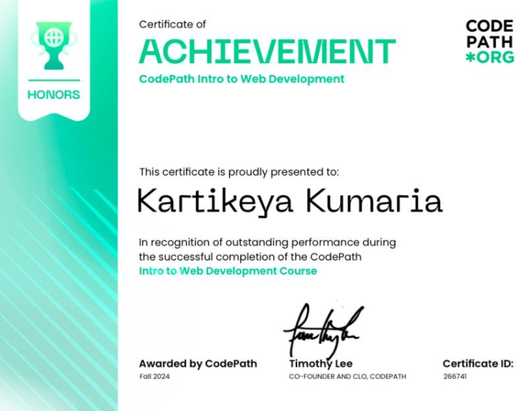

Aspiring full-stack software developer majoring in Computer Science at UC Santa Cruz, expected to complete Bachelor's degree in December 2025. Results-driven Computer Science student with proven skills in software development and analytical problem-solving. Adept at contributing to collaborative projects and delivering effective, user-centered solutions. Brings adaptability, persistence, and a focus on innovation to fast-paced development environments.
Feb 2024 – Present
Oct 2024 – Apr 2025
Apr 2024 – Aug 2024
Oct 2023 – Dec 2023
June 4 – July 10, 2025 | GitHub Repository
February 21 – May 23, 2025 | GitHub Repository
Issuer: CodePath | Issued: Dec 2024
Skills: HTML, CSS, JavaScript
Issuer: SkyIT Services (GBCS Group) | Issued: Aug 2024
Skills: Django REST Framework, Python, MySQL, JSON, Postman, Leadership
Show credentialIssuer: Canvas Credentials | Issued: Apr 2024
Credential ID: 6629141bb1afdc68657da11e
Skills: Node.js, Mocha.js, Docker, Teamwork, Test Automation
Show credential